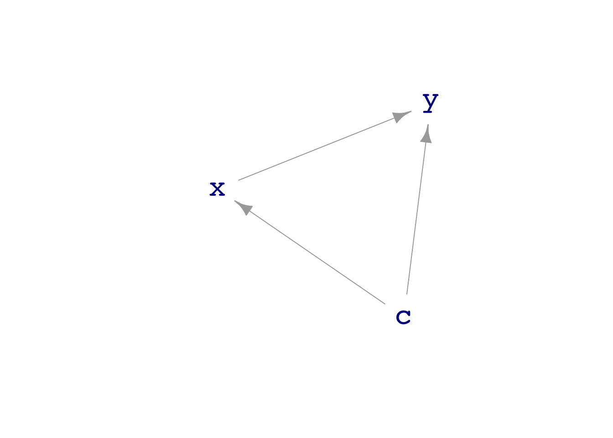
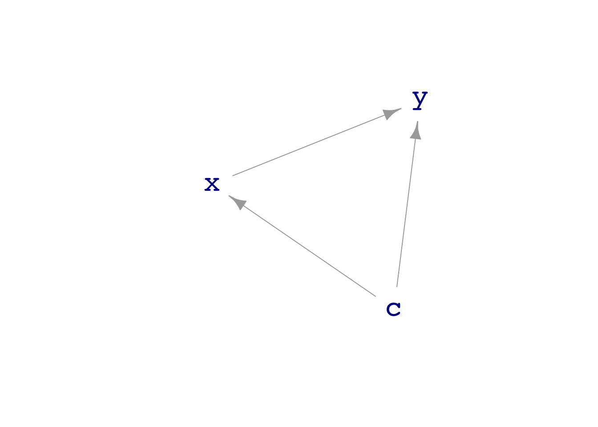

dag_draw(dag08)
Carl Wieman is a Nobel-prize-winning physicist and professor of education at Stanford University. Weiman writes, “For many years, I had two parallel research programs: one blasting atoms with lasers to see how they’d behave, and another studying how people learn.” Some of Wieman’s work on learning deals with the nature of “expertise.” He points out that experts have ways to monitor their own thinking and learning; they have a body of knowledge relevant to checking their own understanding.
This lesson presents you with two tools: simulation and repetition. Simulation enables you to generate variation with known properties, where you know the sources of variation and how variables are connected. Then you can experiment to find out how to use statistical models to reveal the underlying properties.
The second tool, repetition, helps you deal with randomness and quantify precision. By repeating the same simulation many times while introducing basic random fluctuations, you can figure out the extent to which randomness can be tamed.
A core tool in thinking about causal connections is a mathematical structure called a “directed acyclic graph” (DAG, for short). DAGs are one of the most popular ways for statistical thinkers to express their ideas about what might be happening in the real world. Despite the long name, DAGs are very accessible to a broad audience.
DAGs, despite the G for “graph,” are not about data graphics. The “graph” in DAG is a mathematical term of art; a suitable synonym is “network.” Mathematical graphs consist of a set of “nodes” and a set of “edges” connecting the nodes. For instance, Figure 20.1 shows three different graphs, each with five nodes labeled A, B, C, D, and E.


The nodes are the same in all three graphs of Figure 20.1, but each graph is different from the others. It is not just the nodes that define a graph; the edges (drawn as lines) are part of the definition as well.
The left-most graph in Figure 20.1 is an “undirected” graph; there is no suggestion that the edges run one way or another. In contrast, the middle graph has the same nodes and edges, but the edges are directed. An excellent way to think about a directed graph is that each node is a pool of water; each directed edge shows how the water flows between pools. This analogy is also helpful in thinking about causality: the causal influences flow like water.
Look more carefully at the middle graph. There is a couple of loops; the graph is cyclic. In one loop, water flows from E to C to D and back again to E. The other loop runs B, C, D, E, and back to B. Such a flow pattern cannot exist without pumps pushing the water back uphill.
The rightmost graph reverses the direction of some of the edges. This graph has no cycles; it is acyclic. Using the flowing and pumped water analogy, an acyclic graph needs no pumps; the pools can be arranged at different heights to create a flow exclusively powered by gravity. The node-D pool will be the highest, E lower. C has to be lower than E for gravity to pull water along the edge from E to C. The node-B pool is the lowest, so water can flow in from E, C, and A.
Directed acyclic graphs represent causal influences; think of “A causes B,” meaning that causal “water” flows naturally from A to B. In a DAG, a node can have multiple outputs, like D and E, and it might have multiple inputs, like B and C. In terms of causality, a node—like B—having multiple inputs means that more than one factor is responsible for the value of that node. A real-world example: the rising sun causes a rooster to crow, but so can another intruder to the coop.
Often, nodes do not have any inputs. These are called “exogenous factors”at least by economists. The “genous” means “originates from.” “Exo” means “outside.” The value of an exogenous node is determined by something, just not something that we are interested in (or perhaps capable of) modeling. No edges are directed into an exogenous node since none of the other nodes influence its value.
For simulating data, we go beyond drawing a graph of causal connections to outfit DAGs with specific formulas representing the mechanism imbued in each node. DAGs equipped with formulas can be used to generate simulated data.1 Training a model on those data leads to a model function that we can compare to the DAG’s formulas. Then check whether the formulas and the model function match. This practice helps us learn what can go right or wrong in building a model, just as practice in an aircraft simulator trains pilots to handle real-world situations in real aircraft.
We start with a simple example, dag08. The dag_draw() command draws a picture of the graph. Printing the dag displays the formulas that set the values of the nodes.
dag_draw(dag08)
The graph shows that both c and x contribute to y.
print(dag08)c ~ exo()
x ~ c + exo()
y ~ x + c + 3 + exo()The formulas show that x and c contribute equally to y, with coefficients of 1. To what extent can regression modeling recover this relationship from data?
To find out, we can generate simulated data using the sample() function. For instance,
sample(dag08, size=5)| c | x | y |
|---|---|---|
| -0.3260365 | 0.8479298 | 4.048341 |
| 0.5524619 | 1.1712517 | 3.928869 |
| -0.6749438 | -0.7876782 | 2.965133 |
| 0.2143595 | 1.1313877 | 2.878928 |
| 0.3107692 | 0.0875099 | 3.161596 |
Each row in the sample is one trial; in each trial, the node’s formula sets the value for that node. For example, the formula might use the values of other nodes as input. Alternatively, the formula might specify that the node is exogenous, without input from any other nodes.
Models can be trained on the simulated data using the same techniques as for any other data. To illustrate, here we generate a sample of size \(n=50\), then fit the model specification c ~ a + b and summarize by taking the coefficients.
sample(dag08, size=50) %>%
lm(y ~ c + x, data = .) %>%
coef()(Intercept) c x
2.9451445 1.2606473 0.8235923 The coefficients, including the intercept, are close, but not exactly right.
In Lessons -Chapter 21 and -Chapter 22 we will figure out how close we can expect the coefficients to be to the precise values implemented in the simulation.
Beginners sometimes think that each row in a data frame is a sample. Better to say that each row is a “specimen.” A “sample” is a collection of specimens, the set of rows in a data frame.
The “sample size” is the number of rows. “Sampling” is the process of collecting the specimens to be put into the data frame.
The following command illustrates computing a summary of a sample from dag08.
sample(dag08, size=10000) %>%
lm(y ~ c + x, data = .) %>%
coef()(Intercept) c x
3.0070253 1.0100177 0.9934592 An essential question in statistics is how the summary depends on the incidental specifics of a particular sample. DAGs provide a convenient way to address this question since we can generate multiple samples from the same DAG, summarize each, and compare those summaries.
To generate a sample of summaries, re-run many trials of the summary. The do() function automates this process, accumulating the results from the trials in a single data frame: a “sample of summaries.” We will use do() mostly in demonstrations.
do()
In this demonstration, we will revisit a model used earlier in this Lesson to see how much the coefficients vary from one sample to another. Each trial consists of drawing a sample from dag08, training a model, and summarizing with the model coefficients. Curly braces ({ and }) surround the commands needed for an individual trial.
Preceding the curly braces, we have placed do(5) *. This instruction causes the trial to be repeated five times.
do(5) * {
sample(dag08, size=50) %>%
lm(y ~ c + x, data = .) %>%
coef()
}| Intercept | c | x |
|---|---|---|
| 3.019112 | 0.6794641 | 1.3353393 |
| 3.006728 | 0.9042066 | 0.8406397 |
| 2.966061 | 1.1619847 | 0.9307029 |
| 2.866499 | 1.0881640 | 1.0769612 |
| 3.080889 | 1.1088753 | 1.0009938 |
The five trials are collected together by do() into the five rows of a single data frame. Such a data frame can be considered a “sample of summaries.”
One of the things we will do with a “sample of summaries” is to … wait for it … summarize it. For instance, in the following code chunk, a sample of 40 summaries is stored under the name Trials. Then we will summarize Trials, in this case, to see how much the values of the a and b coefficients vary from trial to trial.
Trials <- do(40) * {
sample(dag08, size=50) %>%
glm(y ~ c + x, data = .) %>%
coef()
}
Trials %>%
summarize(mean_c_coef = mean(c), spread_a = sd(c),
mean_x_coef = mean(x), spread_b = sd(c))| mean_c_coef | spread_a | mean_x_coef | spread_b |
|---|---|---|---|
| 0.9858736 | 0.2215985 | 1.022228 | 0.2215985 |
The result of summarizing the trials is a “summary of a sample of summaries.” This phrase is admittedly awkward, but we will use this technique often: summarizing trials, where each trial is a “summary of a sample” Often, the clue will be the use of do(), which repeats trials as many times as you ask.
Often, but not always, our interest in studying data is to reveal or exploit the causal connections between variables. Understanding causality is essential, for instance, if we are planning to intervene in the world and want to anticipate the consequences. Interventions are things like “increase the dose of medicine,” “stop smoking!”, “lower the budget,” “add more cargo to a plane (which will increase fuel consumption and reduce the range).”
Historically, mainstream statisticians were hostile to using data to explore causal relationships. (The one exception was experiment, which gathers data from an actual intervention in the world. See Lesson 32.) Statistics teachers encouraged students to use phrases like “associated with” or “correlated with” and reminded them that “correlation is not causation.”
Regrettably, this attitude made statistics irrelevant to the many situations where intervention is the core concern and experiment was not feasible. A tragic episode of this sort likely caused millions of unnecessary deaths. Starting in the 1940s, doctors and epidemiologists saw evidence that smoking causes lung cancer. In stepped the most famous statistician of the age, Ronald Fisher, to insist that the statement should be, “smoking is associated with lung cancer.” He speculated that smoking and lung cancer might have a common cause, perhaps genetic. Fisher argued that establishing causation requires running an experiment where people are randomly assigned to smoke or not smoke and then observed for decades to see if they developed lung cancer. Such an experiment is unfeasible and unethical, to say nothing of the need to wait decades to get a result.
Fortunately, around 1960, a researcher at the US National Institutes of Health, Jerome Cornfield, was able to show mathematically that the strength of the association between smoking and cancer ruled out any genetic mechanism. Cornfield’s work was an important step in the development of a new area in statistics: “causal inference.”
Causal inference is not about proving that one thing causes another but about formal ways to say something about how the world works that can be used, along with data, to make responsible conclusions about causal relationships.
As you will see in Lesson -Chapter 30, DAGs are a major tools in causal inference, allowing you not only to represent a hypothesis about causal relationships, but to deduce what sorts of models will be able to reveal causal mechanisms.
The point of a DAG is to make a clear statement of a hypothesis about causation. Drawing a DAG does not mean that the hypothesis is correct, just that we believe the hypothesis is, in some sense, a possibility. Different people might have different beliefs about what causes what in real-world systems. Comparing their different DAGs can help, sometimes, to discuss and resolve the disagreement.
We are going to use DAGs for two distinct purposes. One purpose is to inform responsible conclusions from data about what causes what. The data on its own is insufficient to demonstrate the causal connections. However, data combined with a DAG can tell us something. Sometimes a DAG includes a causal connection that should create an association between variables. The DAG is incomplete if the association does not appear in the data.
DAGs are also valuable aids for building models. For example, analysis of the paths in a DAG, as in Lesson 30, can tell us which explanatory variables to include and which to exclude from a model if our modeling goal is to represent the hypothetical causal connections.
In these Lessons, we have a second, entirely different, use for DAGs: learning modeling technique. Our approach will be to ::: {.callout-warning} ## Reality check: DAGs and data
DAGs represent hypotheses about the connections between variables in the real world. They are a kind of scratchpad for constructing alternative scenarios and, as seen in Lesson 28, thinking about how models might go wrong in the face of a plausible alternative causal mechanism.
In this book, we extend the use of DAGs beyond their scope in professional statistics; we use them as simulations from which we can generate data. Such simulations provide one way to learn about statistical methodology.
DAGs are aides to reasoning, scratchpads that help us play out the consequences of our hypotheses about possible real-world mechanisms. However, take caution to distinguish data from DAG simulations from data from reality.
Finding out about the real world requires collecting data from the real world. The proper role of DAGs in real work is to guide model building from real data.
In this course, we sample from DAGs to learn statistical techniques. But never to make claims about real-world phenomena. :::
The value of exogenous nodes is usually set randomly, without input from the other nodes in the DAG.↩︎